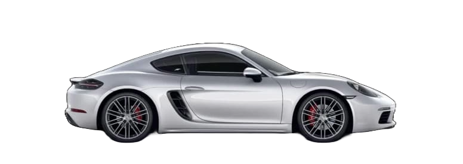
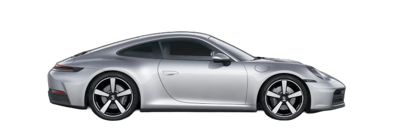
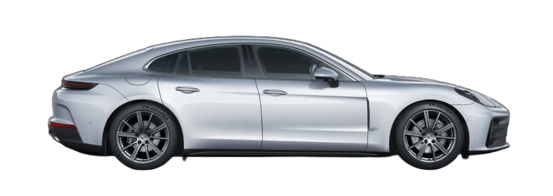
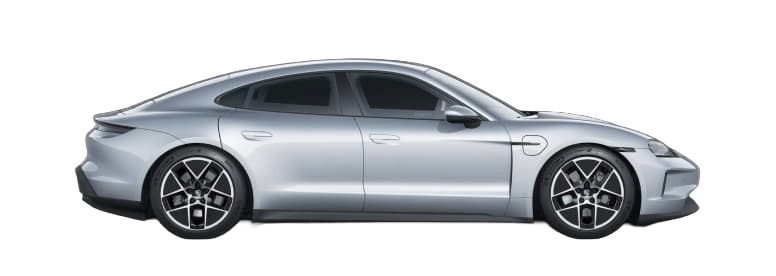
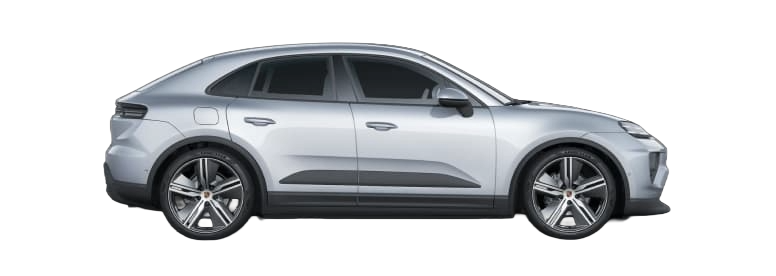
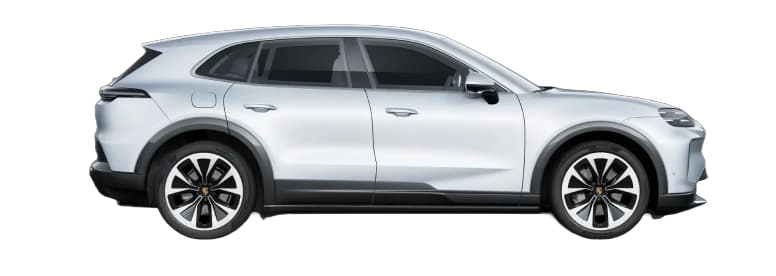
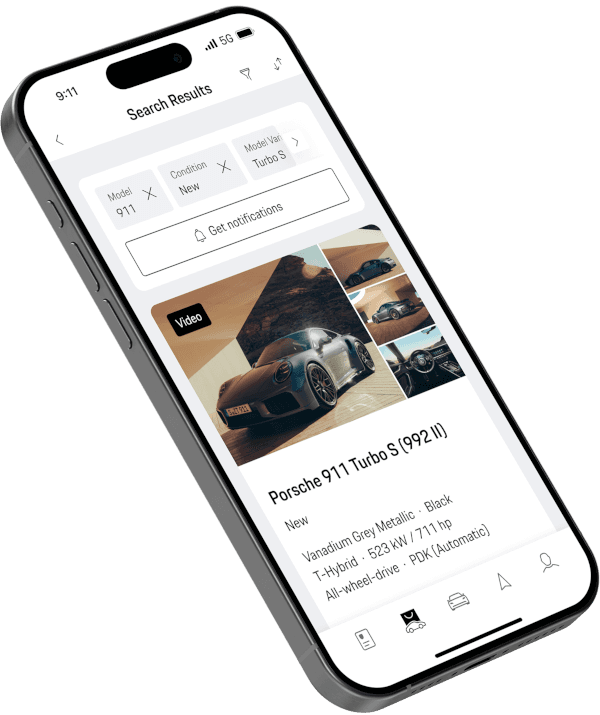
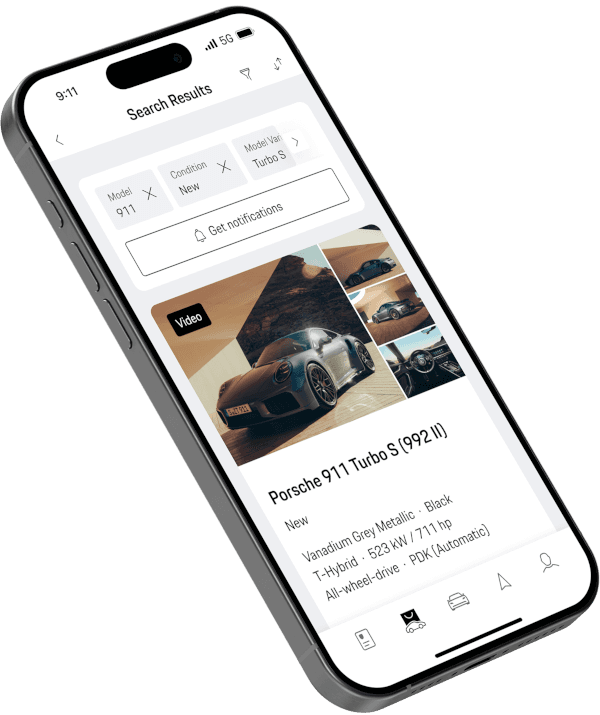

Kies uw model.
Porsche 718 Boxter / Cayman
Porsche 911
Porsche Taycan
Porsche Panamera
Porsche Macan
Porsche Cayenne
 

Nieuw en beschikbaar. Vind uw niuwe Porsche bij een Porsche centrum bij u in de buurt. Kies uit een grote selectie van nieuwe voertuigen
Zoek nieuwe voorraad
Voor dat extra beetje veiligheid en rijplezier. Porsche Approved gebruikte auto's hebben een garantie van minimaal 12 maanden en zijn geslaagd voor onze 111 punten check.
Zoek gecertificeerde PorscheRijplezier kent geen leeftijd. Vind een gebruikte Porsche in een van onze officiële Porsche Centers
Zoek gebruikte PorscheVind uw nieuwe en gebruikte Porsche bij een Porsche Centrum.
De Porsche Finder is het zoekplatform voor nieuwe en gebruikte auto's van de officiële Porsche Centers. In de Porsche Finder kunt u door de huidige aanbiedingen van Porsche Centers bladeren. De meeste voertuigen zijn direct beschikbaar en kunnen worden bezichtigd bij een Porsche Center.
Ongeacht of u geïnteresseerd bent in een nieuwe Porsche of gebruikte Porsche.
Let bij het kopen van een gebruikte Porsche op het Porsche Approved label voor extra veiligheid en kwaliteit. Porsche Approved occasions zijn gecertificeerde auto's die technisch en visueel zijn gekeurd met onze 111-punts check. Alle door Porsche goedgekeurde gebruikte auto's worden geleverd met minimaal 12 maanden Porsche Approved-garantie en Pechhulp. Dit biedt u extra zekerheid, gegarandeerde kwaliteit en rijplezier bij het kopen van een tweedehands Porsche. Van de 718 Boxster en de Cayman, tot de 911 en Cayenne
In de Porsche Finder vindt u alle actuele en Porsche Classic modellen. De zoek- en filtermogelijkheden geven u de keuze tussen nieuwe auto's, tweedehands Porsche en Porsche Approved occasions. Met de modelfilters kunt u uw favoriete model kiezen.
De volgende nieuwe en gebruikte auto's zijn populair:
Een Porsche is net zo uniek als de eigenaar. Het is altijd een uiting van de eigen persoonlijkheid. Om het u gemakkelijker te maken uw Porsche te vinden, zijn er talrijke zoek- en filtermogelijkheden. Selecteer uw gewenste model, kleur en uitrusting. Onder onze uitrustingsopties zijn vooral het Porsche Chrono Pakket, het panoramadak, de cruisecontrol met automatische afstandregeling en het sportuitlaatsysteem populair. Met meer dan 90 uitrustingsopties vindt u snel het voertuig dat bij u past.